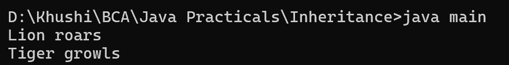

15. Write a Java program to create an abstract class Animal with an abstract method called sound(). Create subclasses Lion and Tiger that extend the Animal class and implement the sound() method to make a specific sound for each animal.
abstract class Animal {
public abstract void sound();
}
class Lion extends Animal {
@Override
public void sound() {
System.out.println("Lion roars");
}
}
class Tiger extends Animal {
@Override
public void sound() {
System.out.println("Tiger growls");
}
}
class main {
public static void main(String[] args) {
Animal lion = new Lion();
lion.sound();
Animal tiger = new Tiger();
tiger.sound();
}
}
